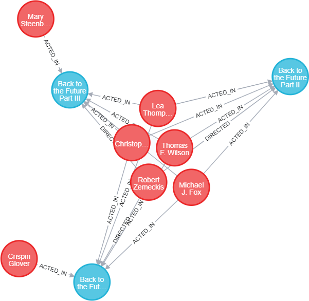
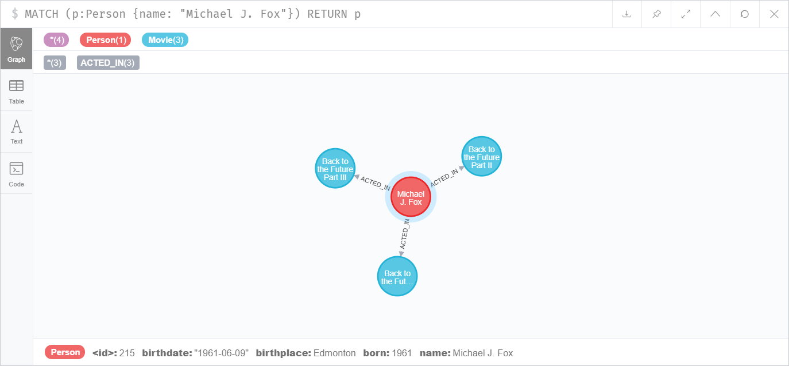
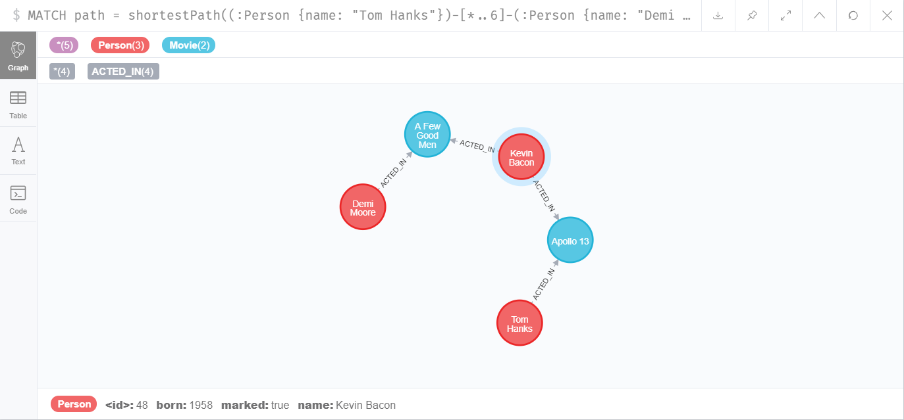
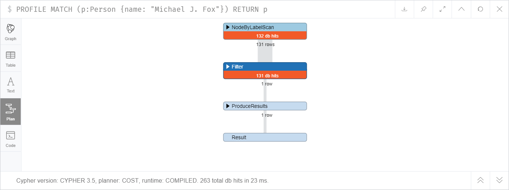
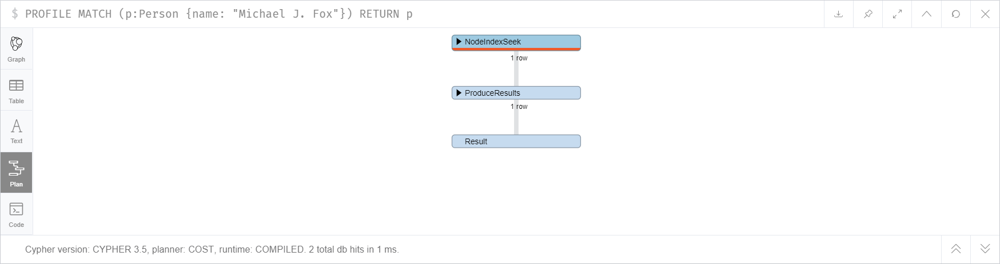

Zainstalowałem Neo4j 3.5.12, Neo4j Browser 4.0.1.
LOAD CSV WITH HEADERS FROM 'https://neo4j.com/docs/cypher-manual/3.5/csv/query-tuning/movies.csv' AS line MERGE (m:Movie { title: line.title }) ON CREATE SET m.released = toInteger(line.released), m.tagline = line.tagline
LOAD CSV WITH HEADERS FROM 'https://neo4j.com/docs/cypher-manual/3.5/csv/query-tuning/actors.csv' AS line MATCH (m:Movie { title: line.title }) MERGE (p:Person { name: line.name }) ON CREATE SET p.born = toInteger(line.born) MERGE (p)-[:ACTED_IN { roles:split(line.roles, ';')}]->(m)
LOAD CSV WITH HEADERS FROM 'https://neo4j.com/docs/cypher-manual/3.5/csv/query-tuning/directors.csv' AS line MATCH (m:Movie { title: line.title }) MERGE (p:Person { name: line.name }) ON CREATE SET p.born = toInteger(line.born) MERGE (p)-[:DIRECTED]->(m)
Wykorzystałem Neo4j Python Driver (https://neo4j.com/developer/python/).
Zaimplementowałem dwie funkcje:
requirements.txt
neo4j==1.7.2
neobolt==1.7.9
neotime==1.7.4
install.bat
pip install -r requirements.txt
main.py
from neo4j import GraphDatabase uri = 'bolt://localhost:7687' user = 'neo4j' password = 'lab5' driver = GraphDatabase.driver(uri, auth=(user, password)) def list_movies(tx): result = tx.run("MATCH (m:Movie) " "RETURN m.title AS title, m.released AS year " "ORDER BY m.released") for record in result: title, year = record['title'], record['year'] print(f'{title} ({year})') def list_movie_actors(tx, movie_title): result = tx.run("MATCH (p:Person)-[:ACTED_IN]->(m:Movie) " "WHERE m.title = $title " "RETURN p.name AS name", title=movie_title) for record in result: print(record['name']) if __name__ == '__main__': with driver.session() as session: session.read_transaction(list_movies) print() session.read_transaction(list_movie_actors, movie_title='The Matrix')
Wynik wykonania powyższego programu:
Something's Gotta Give (1975)
One Flew Over the Cuckoo's Nest (1975)
Top Gun (1986)
Joe Versus the Volcano (1990)
A Few Good Men (1992)
Hoffa (1992)
A League of Their Own (1992)
Unforgiven (1992)
Sleepless in Seattle (1993)
Johnny Mnemonic (1995)
Apollo 13 (1995)
Stand By Me (1995)
That Thing You Do (1996)
Twister (1996)
The Birdcage (1996)
The Devil's Advocate (1997)
As Good as It Gets (1997)
What Dreams May Come (1998)
When Harry Met Sally (1998)
You've Got Mail (1998)
The Matrix (1999)
The Green Mile (1999)
Snow Falling on Cedars (1999)
Bicentennial Man (1999)
The Replacements (2000)
Jerry Maguire (2000)
Cast Away (2000)
The Matrix Revolutions (2003)
The Matrix Reloaded (2003)
The Polar Express (2004)
V for Vendetta (2006)
RescueDawn (2006)
The Da Vinci Code (2006)
Charlie Wilson's War (2007)
Speed Racer (2008)
Frost/Nixon (2008)
Ninja Assassin (2009)
Cloud Atlas (2012)
Emil Eifrem
Hugo Weaving
Laurence Fishburne
Carrie-Anne Moss
Keanu Reeves
CREATE (:Movie {title: "Back to the Future", released: 1985, tagline: "Marty McFly just broke the time barrier. He's only got one week to get it fixed."}), (:Movie {title: "Back to the Future Part II", released: 1989, tagline: "Roads? Where we're going, we don't need roads!"}), (:Movie {title: "Back to the Future Part III", released: 1990, tagline: "They've saved the best trip for last... But this time they may have gone too far."}), (:Person {name: "Michael J. Fox", born: 1961}), (:Person {name: "Christopher Lloyd", born: 1938}), (:Person {name: "Lea Thompson", born: 1961}), (:Person {name: "Crispin Glover", born: 1964}), (:Person {name: "Thomas F. Wilson", born: 1959}), (:Person {name: "Mary Steenburgen", born: 1953}) MATCH (a:Person {name: "Robert Zemeckis"}), (b:Movie) WHERE b.title STARTS WITH "Back to the Future" CREATE (a)-[:DIRECTED]->(b) MATCH (a:Person {name: "Michael J. Fox"}), (b:Movie) WHERE b.title STARTS WITH "Back to the Future" CREATE (a)-[:ACTED_IN {roles: "Marty McFly"}]->(b) MATCH (a:Person {name: "Christopher Lloyd"}), (b:Movie) WHERE b.title STARTS WITH "Back to the Future" CREATE (a)-[:ACTED_IN {roles: "Dr. Emmett Brown"}]->(b) MATCH (a:Person {name: "Lea Thompson"}), (b:Movie) WHERE b.title STARTS WITH "Back to the Future" CREATE (a)-[:ACTED_IN {roles: "Lorraine Baines"}]->(b) MATCH (a:Person {name: "Crispin Glover"}), (b:Movie {title: "Back to the Future"}) CREATE (a)-[:ACTED_IN {roles: "George McFly"}]->(b) MATCH (a:Person {name: "Thomas F. Wilson"}), (b:Movie) WHERE b.title STARTS WITH "Back to the Future" CREATE (a)-[:ACTED_IN {roles: "Biff Tannen"}]->(b) MATCH (a:Person {name: "Mary Steenburgen"}), (b:Movie {title: "Back to the Future Part III"}) CREATE (a)-[:ACTED_IN {roles: "Clara Clayton"}]->(b)
Sprawdzenie:
MATCH (m:Movie) WHERE m.title STARTS WITH "Back to the Future" RETURN m
MATCH (p:Person {name: "Michael J. Fox"}) SET p.birthdate = date("1961-06-09"), p.birthplace = "Edmonton" MATCH (p:Person {name: "Christopher Lloyd"}) SET p.birthdate = date("1938-10-22"), p.birthplace = "Stamford" MATCH (p:Person {name: "Lea Thompson"}) SET p.birthdate = date("1961-05-31"), p.birthplace = "Rochester" MATCH (p:Person {name: "Crispin Glover"}) SET p.birthdate = date("1964-04-20"), p.birthplace = "New York" MATCH (p:Person {name: "Thomas F. Wilson"}) SET p.birthdate = date("1959-04-15"), p.birthplace = "Philadelphia" MATCH (p:Person {name: "Mary Steenburgen"}) SET p.birthdate = date("1953-02-08"), p.birthplace = "Newport"
Sprawdzenie:

MATCH (m:Movie) WHERE m.released < 1998 SET m.old = true
Aktorzy, którzy grali w co najmniej 2 filmach:
Rozwiązanie wykorzystujące collect i length:
MATCH (p:Person)-[:ACTED_IN]->(m:Movie) WITH p, collect(m) as movies WHERE length(movies) >= 2 RETURN p
Alternatywne rozwiązanie wykorzystujące count:
MATCH (p:Person)-[:ACTED_IN]->(m:Movie) WITH p, count(m) as number_of_movies WHERE number_of_movies >= 2 RETURN p
Średnia wystąpień w filmach dla aktorów, którzy wystąpili w co najmniej 3 filmach:
MATCH (p:Person)-[:ACTED_IN]->(m:Movie) WITH p, collect(m) AS movies WITH length(movies) AS number_of_movies WHERE number_of_movies >= 3 RETURN avg(number_of_movies)
Wynik: 4.05263157894737
MATCH path = shortestPath((:Person {name: "Tom Hanks"})-[*]-(:Person {name: "Demi Moore"})) FOREACH (node IN nodes(path) | SET node.marked = true)
Sprawdzenie:

Z wykorzystaniem nodes(path), węzły na ścieżce liczone od 0:
MATCH path = (:Person {name: "Tom Hanks"})-[:ACTED_IN*4]-(:Person {name: "Demi Moore"}) RETURN nodes(path)[2]
Z wykorzystaniem nodes(path), węzły na ścieżce liczone od 1:
MATCH path = (:Person {name: "Tom Hanks"})-[:ACTED_IN*4]-(:Person {name: "Demi Moore"}) RETURN nodes(path)[1]
Z wykorzystaniem startNode(relationship), węzły na ścieżce liczone od 0:
MATCH (:Person {name: "Tom Hanks"})-[rels:ACTED_IN*4]-(:Person {name: "Demi Moore"}) RETURN startNode(rels[2])
Z wykorzystaniem startNode(relationship), węzły na ścieżce liczone od 1:
MATCH (:Person {name: "Tom Hanks"})-[rels:ACTED_IN*4]-(:Person {name: "Demi Moore"}) RETURN startNode(rels[1])
PROFILE MATCH (p:Person {name: "Michael J. Fox"}) RETURN p
Przed utworzeniem indeksu:

Czas wykonania: 23 ms
Kolejne wykonanie zapytania zajmuje znacznie mniej czasu niż za pierwszym razem. Podejrzewam, że wyniki zapytań lub rezultaty niektórych etapów planu wykonania są zapisywanie w pamięci cache.
Utworzenie indeksu:
CREATE INDEX ON :Person(name)
Po utworzeniu indeksu:

Czas wykonania: 1 ms
Zapytanie z punktu 6.
MATCH (m:Movie) WHERE m.released < 1998 SET m.old = true
Czas wykonania zapytania przed utworzeniem indeksu: 37 ms
Utworzenie indeksu:
CREATE INDEX ON :Movie(released)
Czas wykonania zapytania po utworzeniu indeksu: 7 ms
Zapytanie z punktu 9.
MATCH path = shortestPath((:Person {name: "Tom Hanks"})-[*]-(:Person {name: "Demi Moore"})) FOREACH (node IN nodes(path) | SET node.marked = true)
Jeśli przechowywany w bazie danych graf byłby dużych rozmiarów, wskazane byłoby ograniczenie długości poszukiwanej ścieżki. Zamiast [*] należy więc zastosować przykładowo [*..6], które ograniczy obszar przeszukiwania grafu.
MATCH path = shortestPath((:Person {name: "Tom Hanks"})-[*..6]-(:Person {name: "Demi Moore"})) FOREACH (node IN nodes(path) | SET node.marked = true)
from neo4j import GraphDatabase uri = 'bolt://localhost:7687' user = 'neo4j' password = 'lab5' driver = GraphDatabase.driver(uri, auth=(user, password)) def make_spanning_tree(tx): nodes = { record['id']: { 'name': record['name'], # person name or movie title from database 'graph_neighbours': [], # list of connected nodes from database 'dfs_visited': False, # flag for DFS algorithm 'tree_children': [] # list of spanning tree edges } for record in tx.run("MATCH (p:Person) RETURN ID(p) AS id, p.name AS name " "UNION ALL MATCH (m:Movie) RETURN ID(m) AS id, m.title AS name ") } result = tx.run("MATCH (p:Person)-[:ACTED_IN|:DIRECTED]->(m:Movie)" "RETURN ID(p) AS person_id, ID(m) AS movie_id") for record in result: person_id, movie_id = record['person_id'], record['movie_id'] nodes[person_id]['graph_neighbours'].append(movie_id) nodes[movie_id]['graph_neighbours'].append(person_id) def dfs(this_id, prev_id=None): nodes[this_id]['dfs_visited'] = True if prev_id is not None: nodes[prev_id]['tree_children'].append(this_id) for next_id in nodes[this_id]['graph_neighbours']: if not nodes[next_id]['dfs_visited']: dfs(next_id, this_id) start, *_ = nodes.keys() # take any node ID dfs(start) nodes_count = len(nodes) spanning_tree_edges_count = sum(map(lambda node: len(node['tree_children']), nodes.values())) assert nodes_count == spanning_tree_edges_count+1 # check tree condition def print_tree(node_id, left=0): print(' ' * left + nodes[node_id]['name']) for child_id in nodes[node_id]['tree_children']: print_tree(child_id, left+1) print_tree(start) if __name__ == '__main__': with driver.session() as session: session.read_transaction(make_spanning_tree)
Wynik wykonania programu (dla czytelności wyciąłem środkowy fragment):
Keanu Reeves
The Replacements
Howard Deutch
Brooke Langton
Orlando Jones
Gene Hackman
The Birdcage
Mike Nichols
Charlie Wilson's War
Julia Roberts
Tom Hanks
Cloud Atlas
Tom Tykwer
Lana Wachowski
The Matrix Revolutions
Andy Wachowski
The Matrix Reloaded
Hugo Weaving
The Matrix
Emil Eifrem
Laurence Fishburne
Carrie-Anne Moss
V for Vendetta
(...)
Matthew Fox
John Goodman
Emile Hirsch
Ben Miles
Christina Ricci
Susan Sarandon
Stephen Rea
John Hurt
Natalie Portman
Jim Broadbent
Halle Berry
That Thing You Do
Liv Tyler
Charlize Theron
The Devil's Advocate
Taylor Hackford
Al Pacino
Unforgiven
Clint Eastwood
Richard Harris
Johnny Mnemonic
Robert Longo
Dina Meyer
Ice-T
Takeshi Kitano